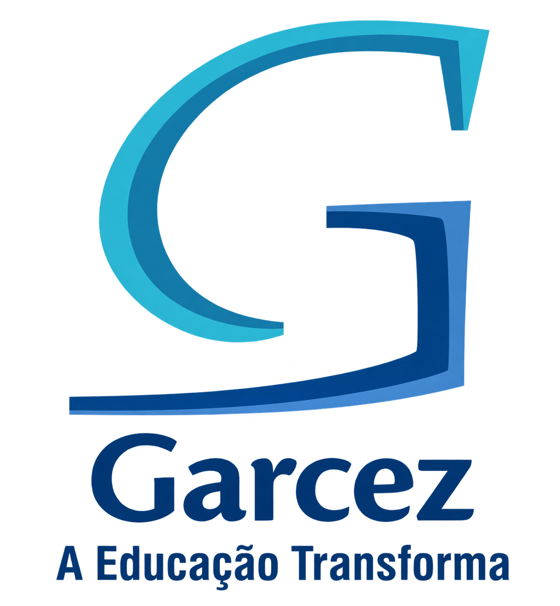

A Educação Transforma
Uma trajetória construída através da educação
O Colégio Garcez, localizado em Arapongas, Paraná, possui uma história construída através da educação, do trabalho de seus profissionais e da participação de seus alunos.
Ao longo dos anos, a escola passou por diversas mudanças e evoluções. Novos espaços foram criados, novas tecnologias chegaram e diferentes gerações de estudantes passaram pelos corredores da instituição.
Porém, mesmo com todas essas mudanças, a escola continua tendo como objetivo principal oferecer educação e contribuir para a formação de seus alunos.
Essa frase representa a importância da educação na transformação das pessoas e da sociedade.
7 momentos importantes da história da escola
A instituição começou suas atividades em 1967, quando o Ginásio Comercial Estadual funcionava anexado ao Colégio Comercial de Arapongas. Isso foi oficializado pelo Decreto nº 7.602, de 16 de novembro de 1967.
Em 1969, pelo Decreto nº 16.684, de 3 de outubro, a instituição passou a se chamar Ginásio Estadual Antônio Garcez Novaes, nome que homenageia Antônio Garcez Novaes.
Ao longo dos anos, o colégio foi ampliando sua atuação. Em 1976, passou a ser denominado Escola Antônio Garcez Novaes – Ensino de 1º Grau. Em 1988, tornou-se Colégio Estadual Antônio Garcez Novaes – Ensino de 1º e 2º Graus, oferecendo uma formação escolar mais ampla.
Na década de 1990, novas mudanças ocorreram. Em 1991, foi reconhecido o ensino de 2º grau com o curso de Auxiliar/Técnico em Contabilidade. Posteriormente, a escola passou a oferecer o Ensino Médio, e em 1998 adotou a denominação Colégio Estadual Antônio Garcez Novaes – Ensino Fundamental e Médio.
A instituição também passou a oferecer educação profissional. Em 2005, foi solicitado o curso Técnico em Enfermagem, com previsão de início em 2006. Mais tarde, o colégio continuou oferecendo cursos técnicos, incluindo formações na área profissional.
Um momento importante aconteceu em 2013, quando a quadra poliesportiva do colégio foi reformada. A obra incluiu a troca da cobertura e a recuperação do piso de madeira, com investimento de R$ 180 mil.
Em 2017, o Colégio Antônio Garcez Novaes comemorou seu Jubileu de Ouro, marcando 50 anos de história desde sua fundação em 1967. A comemoração reuniu professores, funcionários, autoridades, alunos e pessoas que fizeram parte da trajetória da instituição.
Pessoas que fazem parte da história do Colégio Garcez
Entrevista com o diretor Renato contando um pouco sobre a história e a realidade do Colégio Garcez.
Entrevista sobre suas experiências, lembranças e participação na história da escola.
Entrevista com a Cintia contando sobre a biblioteca e sua importância para os alunos.
Entrevista com a Tia Nana, conhecida por cuidar e acompanhar os alunos no pátio.
Uma trajetória construída através da educação.
Sete etapas importantes da evolução da escola.
Quatro pessoas contando suas experiências.